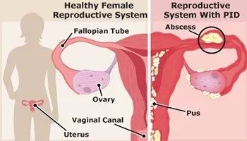
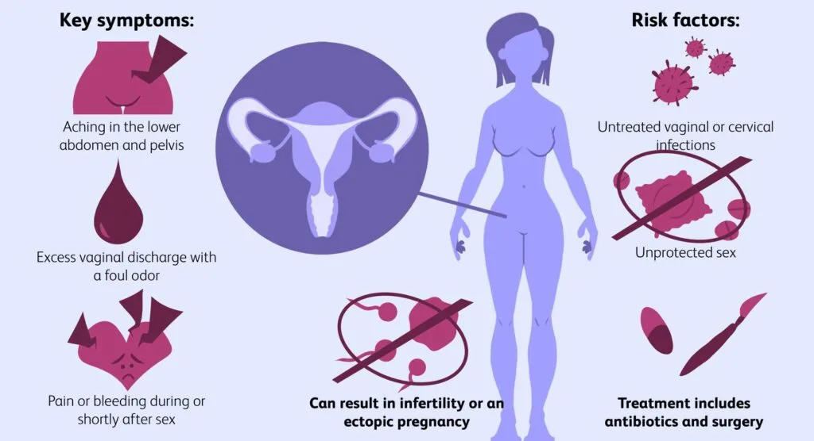
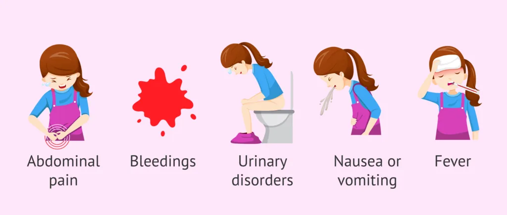
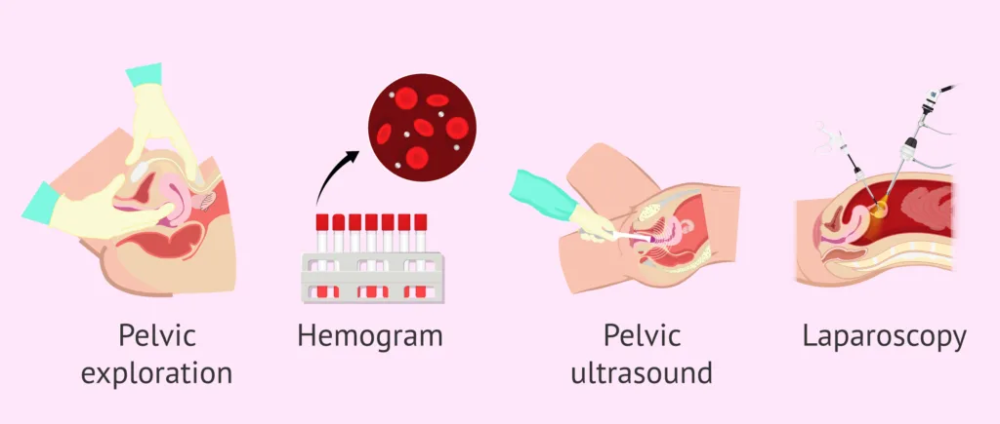
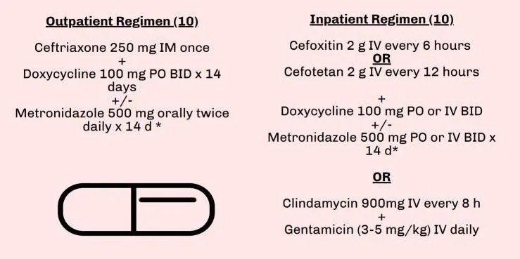
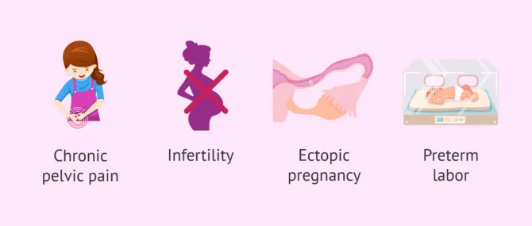

Expanded Nursing Uganda Explanation
Pelvic Inflammatory Diseases should be understood beyond a short definition. Link the concept to patient history, focused assessment, common risks, nursing priorities, documentation and evaluation of outcomes.
01 Pelvic Inflammatory Diseases (PID)
Pelvic inflammatory diseases are diseases of the upper genital tract.
It is a spectrum of infection and inflammation of the upper genital tract organs involving the endometrium, fallopian tubes, ovaries, pelvic peritoneum and surrounding structures.
Infections, often ascending from the vagina, can lead to salpingitis, endometritis, pelvic peritonitis, or the formation of tubo-ovarian abscesses.
02 Aetiology of Pelvic Inflammatory Diseases
Exact cause is unknown but PID is often attributed to multiple pathogens, including
- Neisseria Gonorrhoeae : A bacterium that causes the sexually transmitted infection gonorrhoea . If left untreated, gonorrhoea can ascend from the cervix to the upper reproductive organs, leading to PID.
- Chlamydia Trachomatis : The bacterium responsible for chlamydia , another common sexually transmitted infection. Chlamydia can infect the cervix and ascend to the uterus and fallopian tubes, leading to PID.
- Mycoplasma : Certain species of Mycoplasma, such as Mycoplasma genitalium , have been implicated in PID. These bacteria can cause inflammation and infection in the reproductive tract.
- Gardnerella Vaginalis : An overgrowth of Gardnerella vaginalis can lead to bacterial vaginosis, an imbalance of vaginal bacteria that can contribute to the development of PID.
- Bacteroides : Bacteroides species are anaerobic bacteria that can be involved in the polymicrobial infection associated with PID.
- Gram-Negative Bacilli like Escherichia Coli : Certain gram-negative bacteria, including Escherichia coli , commonly found in the gastrointestinal tract, can cause infections in the reproductive organs, contributing to the development of PID.
03 Risk Factors/Other Factors.
The aetiology of pelvic inflammatory diseases (PIDs) can be attributed to several other factors, including:
- Sexually Transmitted Infections (STIs): Infections such as chlamydia and gonorrhoea are common causes of PID. These bacteria can travel from the cervix to the upper genital tract, leading to inflammation and infection.
- Bacterial Vaginosis : Imbalance of normal vaginal bacteria can increase the risk of developing PID. The overgrowth of harmful bacteria can lead to inflammation and infection of the reproductive organs.
- Postpartum or Post-Abortion Infections : Infections following childbirth or abortion can lead to inflammation of the reproductive organs, increasing the risk of PID.
- IUD Insertion : Insertion of intrauterine devices (IUDs) for contraception can introduce bacteria into the reproductive tract, potentially leading to PID.
- Endometrial Procedures : Certain medical procedures, such as endometrial biopsy or dilation and curettage (D&C), can introduce bacteria into the uterus, increasing the risk of PID.
- Unprotected Sexual Activity : Engaging in unprotected sexual activity with multiple partners can increase the risk of acquiring STIs, which can lead to PID.
- Douching : Douching is the practice of washing or flushing the vagina with water or other fluids. It can disrupt the natural balance of bacteria in the vagina, increasing the risk of developing PID.
- Previous PID Infections : Individuals with a history of pelvic inflammatory disease are at an increased risk of developing recurrent episodes of PID.
- Multiple or New Sexual Partners : Engaging in sexual activity with multiple partners or having a new sexual partner can elevate the risk of acquiring sexually transmitted infections (STIs) that can lead to PID.
- History of STIs in the Patient or Her Partner : A history of sexually transmitted infections, such as chlamydia or gonorrhea, in either the patient or her partner can increase the likelihood of developing PID.
- History of Abortion : Previous induced abortions can be a risk factor for PID, particularly if the procedure leads to infections in the reproductive tract.
- Young Age (Less Than 25 Years): Younger individuals, particularly adolescents, are at a higher risk of PID, possibly due to increased sexual activity and immature cervix, which may facilitate the spread of infections.
- Postpartum Endometritis : Infections following childbirth, particularly involving the lining of the uterus (endometritis), can increase the risk of developing PID.
04 Clinical Manifestations of Pelvic Inflammatory Diseases (PID)
- Lower Abdominal Pain (usually <2 weeks): Patients with PID commonly experience pain in the lower abdominal region, usually lasting for less than two weeks. This pain is often a result of the inflammation and infection affecting the pelvic organs. The nature of the pain is bilateral, affecting both sides of the lower abdomen.
- Dysuria, Fever : Dysuria (painful or difficult urination) and fever are indicative symptoms of PID. These manifestations result from the inflammatory response and the body’s attempt to combat the infection.
- Smelly Vaginal Discharge Mixed with Pus : PID can lead to an alteration in vaginal discharge, which may become malodorous and contain pus. This change is a consequence of the infection affecting the reproductive organs and the discharge’s composition.
- Painful Sexual Intercourse (Dyspareunia) : Dyspareunia, or pain during sexual intercourse, is a common symptom of PID. Inflammation and infection can make sexual activity uncomfortable or painful.
- Cervical Motion Tenderness : Cervical motion tenderness is a clinical sign observed during a pelvic examination. It involves pain or discomfort when the cervix is moved, indicating inflammation in the pelvic region, specifically around the cervix.
- Abnormal Uterine Bleeding: PID may cause irregular or abnormal uterine bleeding. The inflammatory processes can disrupt the normal menstrual cycle, leading to unusual bleeding patterns.
- Palpable Swellings in Severe Cases : In severe cases of PID, palpable swellings may be detected, indicating the presence of pus in the fallopian tubes or the development of a pelvic abscess. Signs of peritonitis, such as rebound tenderness (pain upon release of pressure), suggest an advanced and serious stage of the disease.
- Urinary Symptoms : PID can sometimes affect the nearby urinary structures, leading to symptoms like increased frequency or urgency of urination. This occurs due to the proximity of the reproductive and urinary organs in the pelvic region.
- Gastrointestinal Symptoms : PID’s inflammatory processes can extend to the gastrointestinal tract, causing symptoms such as nausea, vomiting, or diarrhoea. These symptoms may result from the proximity of the reproductive and digestive organs in the pelvic cavity.
- Painful Bowel Movements : PID can cause inflammation around the pelvic organs, leading to pain during bowel movements. This symptom is a consequence of the infection affecting the nearby structures.
- Adnexal Mass: The presence of an adnexal mass, indicating swelling or enlargement in the region near the uterus and ovaries, can be detected in PID cases. This mass is a clinical finding associated with pelvic inflammation.
- Speculum Examination : A speculum examination may reveal a congested cervix with purulent discharge, providing visual evidence of cervical involvement in PID.
- Intermenstrual Bleeding : Intermenstrual bleeding, occurring between regular menstrual cycles, is another symptom associated with PID, contributing to the spectrum of abnormal bleeding patterns.
- Post-coital Bleeding : Post-coital bleeding, or bleeding following sexual intercourse, is highlighted as a distinctive symptom of PID, reflecting the impact of inflammation on the reproductive organs.
05 Diagnosis and Investigations for Pelvic Inflammatory Diseases (PID)
- Gram Staining: Gram staining to detect intracellular diplococci, providing microscopic evidence of bacterial presence. This method aids in identifying pathogens like Neisseria gonorrhoeae.
- Cervical Culture and Sensitivity : Collecting pus samples for culture and sensitivity from the cervix helps identify the specific microorganisms causing the infection and their sensitivity to antibiotics.
- Abdominal Pelvic Ultrasound Scan : An ultrasound scan assesses the abdominal and pelvic regions. While it may appear normal in some cases, it is crucial for detecting complications such as pelvic tubo-ovarian abscess or hydrosalpinx.
- Pelvic Tubo-Ovarian Abscess : Visualization of a pelvic tubo-ovarian abscess is a diagnostic indicator, revealing a localized collection of pus and inflammatory tissue within the pelvic region.
- Physical Examination – Must Include:
- Lower Abdominal Pain (LAP): Assessment of lower abdominal pain,, as PID commonly presents with pelvic discomfort.
- Cervical Motion Tenderness : Tenderness observed during movement of the cervix is a clinical sign of PID.
- Adnexal Tenderness : Tenderness in the adnexal region (near the uterus and ovaries).
6. Speculum Examination : A speculum examination assists in assessing the cervix and vaginal canal.
7. Pregnancy Test : Conducting a pregnancy test is essential to rule out pregnancy-related causes of pelvic symptoms.
06 Management of Pelvic Inflammatory Diseases
Aims of Management
- To eliminate the infection.
- To relieve symptoms.
- To prevent complications.
Medical Management:
Outpatient treatment involves a combination of medications covering multiple microorganisms.
- Ceftriaxone 250 mg IM (or cefixime 400 mg stat if ceftriaxone is not available)
- Doxycycline 100 mg orally every 12 hours for 14 days
- Metronidazole 400 mg twice daily orally for 14 days
- In pregnancy, erythromycin 500 mg every 6 hours for 14 days replaces doxycycline.
- Do not use doxycycline during pregnancy and breastfeeding.
For severe Cases, Admission is considered.
- Severe cases or those not improving after 7 days require referral for ultrasound scan and parenteral treatment.
- Patients with severe PID should be admitted and injectable antibiotics should be given for at least 2 days then switch to the oral antibiotics.
- IV Clindamycin 900 mg 8 hourly plus gentamycin 2 mg/kg loading dose then 1.5mg/kg 8 hourly. OR Ceftriaxone 1 g IV daily plus metronidazole 500mg IV every 8 hours until clinical improvement, then continue oral regimen.
- Note : A number of patients have repeated infection resulting from inadequate treatment or re-infection from untreated partners.
- Therefore : Male sexual partners should be treated with drugs that cover N.gonorrhoeae and C. Trachomatis to avoid reinfection.ie. Cefixime 400 mg stat Plus Doxycycline 100mg 12 hourly for 7 days.
07 Nursing Interventions for Pelvic Inflammatory Disease (PID):
- Assessment (History and Physical Examination): Thorough assessment, including a detailed history and physical examination, helps identify specific symptoms, risk factors, and the extent of pelvic involvement.
- Fever Management : Effective management of fever involves monitoring temperature regularly and implementing interventions such as antipyretic medications and cooling measures to ensure patient comfort and prevent complications.
- Pain Management : Over-the-counter nonsteroidal anti-inflammatory drugs (NSAIDs), like ibuprofen, can alleviate pelvic pain and inflammation. Prescription pain medications may be considered for severe cases.
- Anxiety Alleviation : Addressing emotional well-being is crucial. Provide support and information to alleviate anxiety related to the diagnosis, treatment, and potential complications of PID.
- Health Education : Patient education focuses on understanding PID, its causes, and the importance of compliance to prescribed medications. Information on preventive measures, symptom recognition, and follow-up care is also provided.
- Rest and Sleep Promotion : Encouraging adequate rest and sleep aids in the body’s recovery process. Assist in creating a conducive environment for rest, addressing discomfort and promoting relaxation.
- Hygiene (Bowel and Bladder Care): Maintaining proper hygiene, especially regarding bowel and bladder care, is emphasized to prevent infections and promote overall well-being during the recovery phase.
- Dietary Guidance : Provide dietary recommendations to support healing. Adequate nutrition is essential for recovery, and guidance may include hydration, balanced meals, and nutritional supplements if necessary.
- Discharge Advice : Comprehensive discharge instructions cover post-treatment care, prescribed medications, and potential signs of complications. Patients are educated on when to seek medical attention and the importance of completing the entire course of antibiotics.
- Sexual Partners : Educating and treating sexual partners exposed to the same STIs is A MUST. This preventive measure aims to interrupt the cycle of reinfection and reduce the transmission of STIs.
- Follow-up Care : Post-treatment follow-up ensures the effectiveness of antibiotic therapy. Recommend additional tests or visits to confirm resolution and assess for any complications.
- Prevention : Emphasize preventive measures, including safe sex practices, consistent condom use, regular STI testing, and limiting sexual partners. Vaccination against specific STIs, such as HPV and hepatitis B, is promoted to reduce the risk of PID. Education on maintaining a healthy sexual lifestyle is also provided.
08 Complications of Pelvic Inflammatory Disease (PID)
- Infertility : PID poses a high risk of infertility by causing scarring and damage to the reproductive organs. This can impair fertility by obstructing the fallopian tubes, disrupting normal ovulation, or affecting the uterus.
- Ectopic Pregnancy : The increased likelihood of scarring in the fallopian tubes from PID raises the risk of ectopic pregnancies. An ectopic pregnancy occurs when a fertilized egg implants outside the uterus, usually in the fallopian tubes, posing a serious medical emergency.
- Chronic Pelvic Pain : Persistent or recurrent pelvic pain may develop as a long-term consequence of PID.
- Pelvic Abscess : In some cases, untreated or severe PID can lead to the formation of a pelvic abscess, a collection of pus within the pelvic cavity.
- Pelvic Peritonitis : Pelvic peritonitis refers to inflammation of the peritoneum, the lining of the pelvic cavity. It can result from the spread of infection within the pelvis, leading to severe abdominal pain, tenderness, and potential complications.
- Tubo-ovarian Abscess (TOA): A tubo-ovarian abscess is a localized collection of infected fluid involving the fallopian tubes and ovaries. This serious complication may necessitate surgical intervention, such as drainage or removal of the abscess.
- Adhesions and Scarring : PID can contribute to the formation of adhesions and scarring within the pelvic organs. These adhesions may lead to structural changes, increasing the risk of complications such as bowel obstruction or chronic pain.
Images Reference: https://www.invitra.com/en/pelvic-inflammatory-disease
09 Nursing Uganda Clinical Lens
Use Pelvic Inflammatory Diseases as a practical nursing topic, not only a memorized definition. Prioritize airway, breathing, circulation, pain, asepsis, wound healing and early complication detection.
- What to understand first: define pelvic inflammatory diseases, identify the normal or expected pattern, then explain what changes when the patient is unwell.
- Why it matters in care: the nurse must recognize risk early, explain findings clearly, document accurately and know when to escalate.
- How to revise it: connect each point to assessment, nursing diagnosis or care problem, intervention, rationale and evaluation.
10 Assessment Guide
- Vital signs, pain, bleeding, perfusion, level of consciousness and injury pattern.
- Wound appearance, drainage, odour, swelling, temperature and surrounding skin.
- Fluid balance, mobility, nutrition, surgical site risk and ordered investigations.
11 Nursing Priorities, Rationales and Outcomes
- Stabilize urgent problems first, then prepare for investigations or theatre care.
- Maintain aseptic technique, pain control, wound care and documentation.
- Prevent shock, infection, pressure injury, deep vein thrombosis and delayed healing.
The rationale for these priorities is patient safety: nursing actions should prevent deterioration, reduce discomfort, support recovery and create clear evidence for the next caregiver.
- Expected outcome: The patient remains stable, wound healing progresses, pain is controlled and complications are recognized early.
12 Patient Teaching and Revision Check
- Explain pelvic inflammatory diseases in simple language the patient or caregiver can repeat back.
- Teach warning signs, medicine or follow-up instructions, hygiene or lifestyle points where relevant.
- For exams, prepare a short answer using: definition, causes or risk factors, signs, assessment, management, complications and prevention.
- For ward practice, document baseline findings, actions taken, patient response and the plan for review.
Illustrations and Diagrams (7)







Related Video Lectures
Watch nursing lecture videos on YouTube for this topic. Opens in a new tab.
Watch on YouTubeExternal link: YouTube may use its own cookies and terms. Nursing Uganda is not affiliated with YouTube.